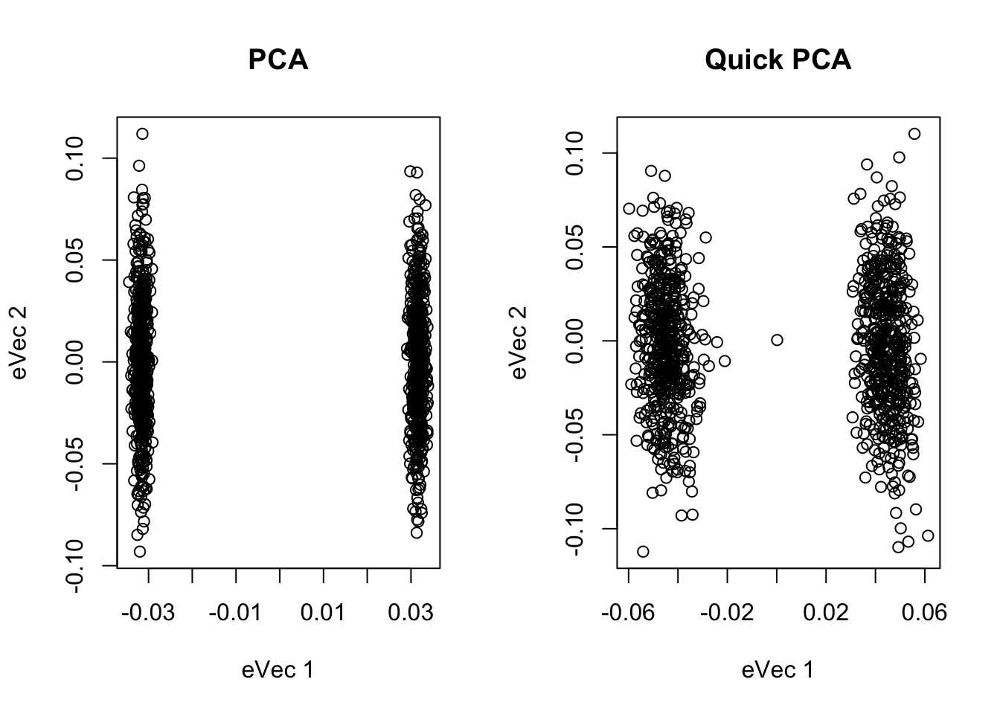

Chapter 10 Appendix quick pca
See PLoS ONE, 2014, 9:e93766
library(MASS)## Warning: package 'MASS' was built under R version 3.4.4N=1000 #sample size
M=2000 #SNP
X=matrix(0, N, M) #SNP matrix
#simulating snp
for(i in 1:M) {
p1=runif(1, 0.1, 0.9)
p2=1-p1
X[1:(N/2),i]=rbinom(N/2, 2, p1)
X[(N/2+1):N,i]=rbinom(N/2, 2, p2)
}
#conventional PCA
sX=scale(X)
G=sX%*%t(sX)
Geg=eigen(G)
#plot(Geg$vectors[,1], Geg$vectors[,2])
#quick pca
dm=30
sg=matrix(0,dm,dm)
diag(sg)=1
R=mvrnorm(M, rep(0, dm), Sigma=sg)
xt=sX%*%R
ss=apply(xt^2, 2, sum)
Y=matrix(0, nrow(xt), ncol(xt))
for(i in 1:length(ss)) {
Y[,i]=xt[,i]/ss[i]
}
XtX=sX%*%t(sX)
maxiter=10
for(it in 1:maxiter) {
xxt=XtX%*%Y
ss1=apply(xxt^2, 2, sum)
for(i in 1:length(ss1)) {
Y[,i]=xxt[,i]/ss1[i]
}
}
QR=qr.default(Y)
B=t(QR$qr)%*%sX
S=B%*%t(B)
eg=eigen(S)
U=QR$qr %*% eg$vectors
D=sqrt(eg$values/(N-1))
P=U*D
par(mfrow = c(1,2))
plot(main="PCA", xlab="eVec 1", ylab="eVec 2", Geg$vectors[,1], Geg$vectors[,2])
plot(main="Quick PCA", xlab="eVec 1", ylab="eVec 2", U[,1], U[,2])
cor(Geg$vectors[,1], U[,1])## [1] 0.991082